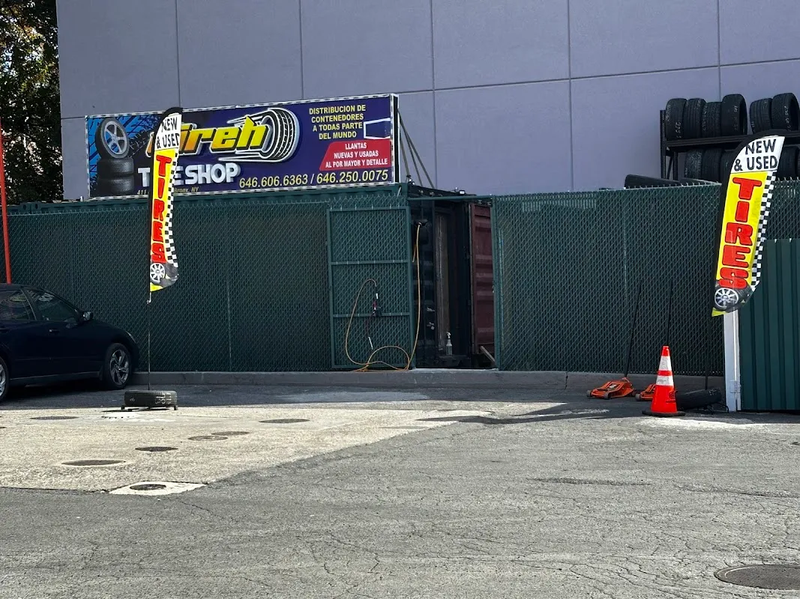
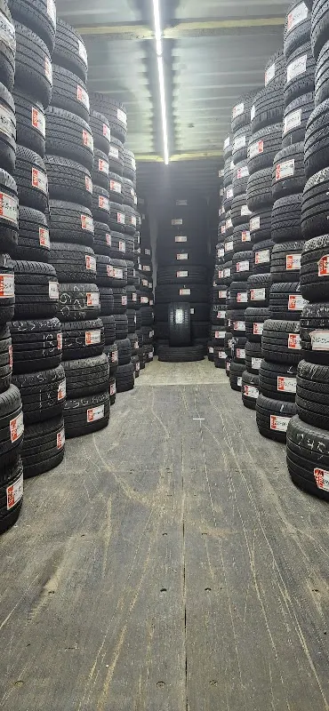

Jireh.
Know your size.
A tire shop in the Bronx. Start with your sidewall markings and ask Jireh about fitment, price and availability.
Browse sample tires →411 E 135th St, Bronx, NY 10454
Start with your tire size
Find the size on your tire’s sidewall. Bring it into the conversation before asking the shop about a replacement.
Your enquiry size. Confirm fit, load and speed ratings with the shop.
Explore sample tires →This prepares an enquiry. It does not verify vehicle fitment, price or stock.
The Jireh tire rack
The sample rack shows how real products can carry size, brand and stock information together.


A visit to Jireh
jireh Tire shop is at 411 E 135th St, Bronx, NY 10454. Explore the business photographs, then plan a visit or call to ask about the current selection.
Plan your visit →